Explore the majestic hill forts, witness the valour, and experience the adventurous trails that echo the legacy of Chhatrapati Shivaji Maharaj.
350+ forts captured • 100+ trekking routesChhatrapati Shivaji Maharaj built, renovated and captured over 350 forts. Here are some of the most significant ones.
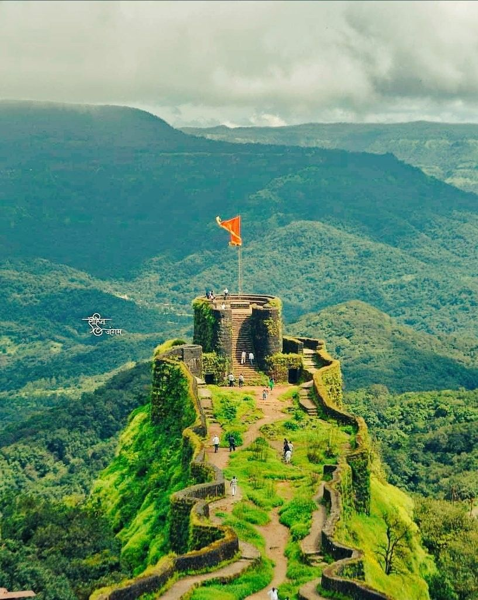
The capital fort of the Maratha empire, where Shivaji Maharaj was crowned in 1674. The iconic Takmak tok and royal durbar are must-sees.
Raigad district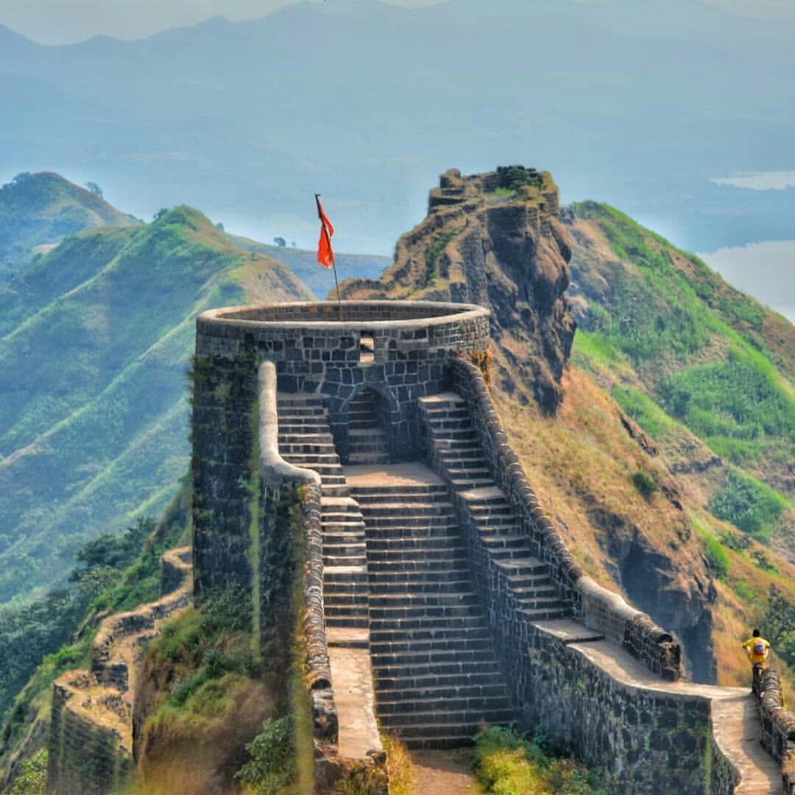
Site of the legendary encounter between Shivaji Maharaj and Afzal Khan. The fort offers panoramic views from the Mahabaleshwar region.
Near Mahabaleshwar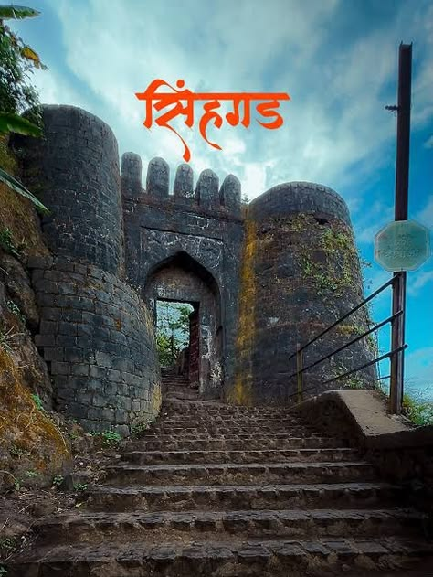
Previously known as Kondhana, this fort celebrates the bravery of Tanaji Malusare. A trekker's paradise just 30 km from Pune.
Pune district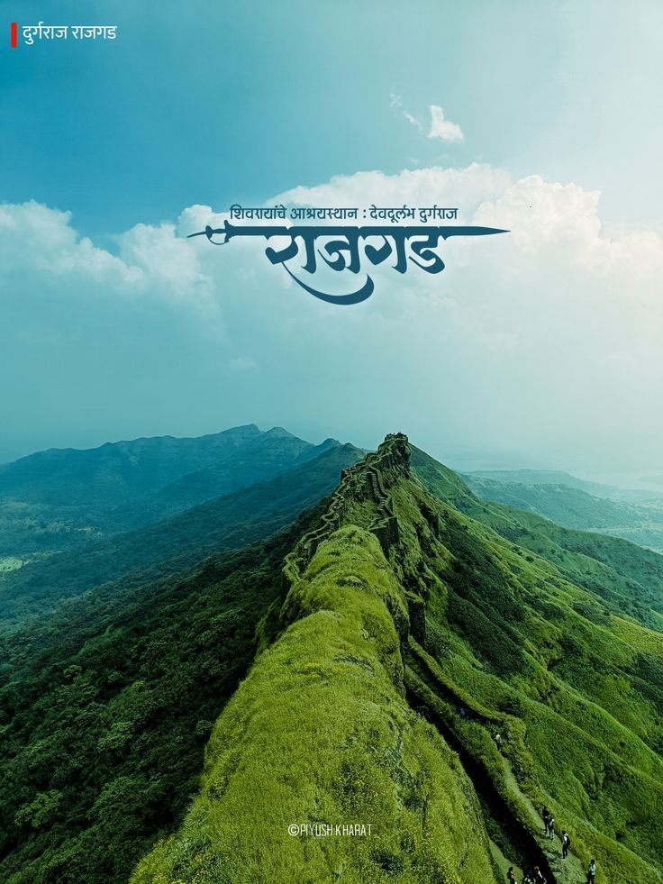
One of the longest serving capitals of the Maratha empire. It boasts of massive walls, three sub-plateaus and a mesmerizing view.
Pune district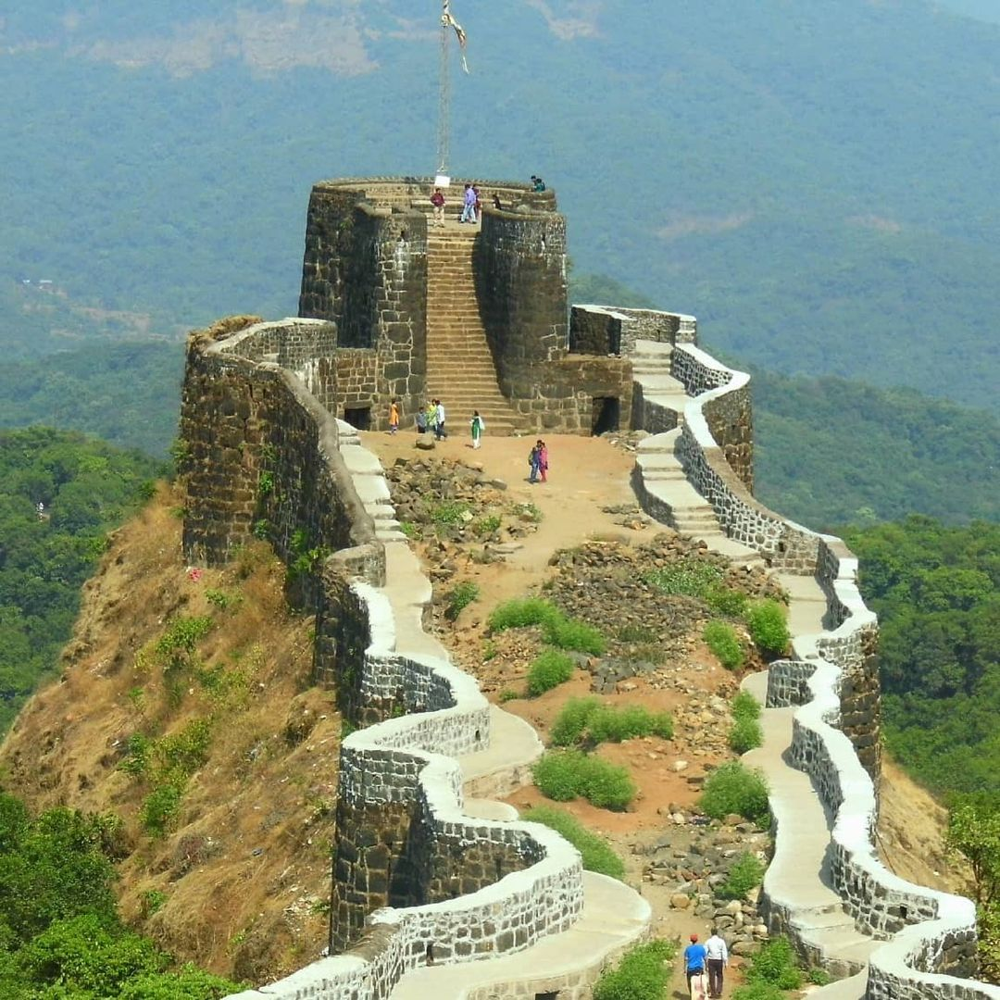
The first fort captured by Shivaji Maharaj at age 16. Also known as Prachandagad, it's the highest hill-fort in the Pune region.
Bhor, Pune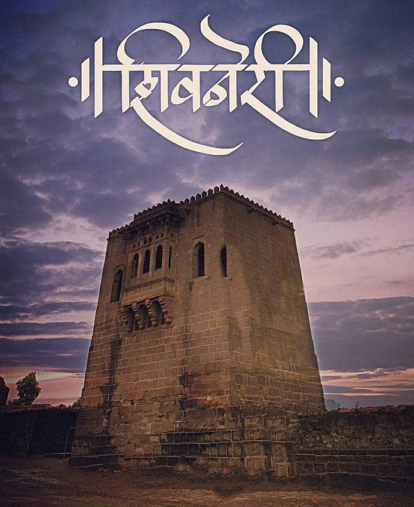
Birthplace of Chhatrapati Shivaji Maharaj. The fort has seven gates and a unique water system, nestled near Junnar.
Junnar, Pune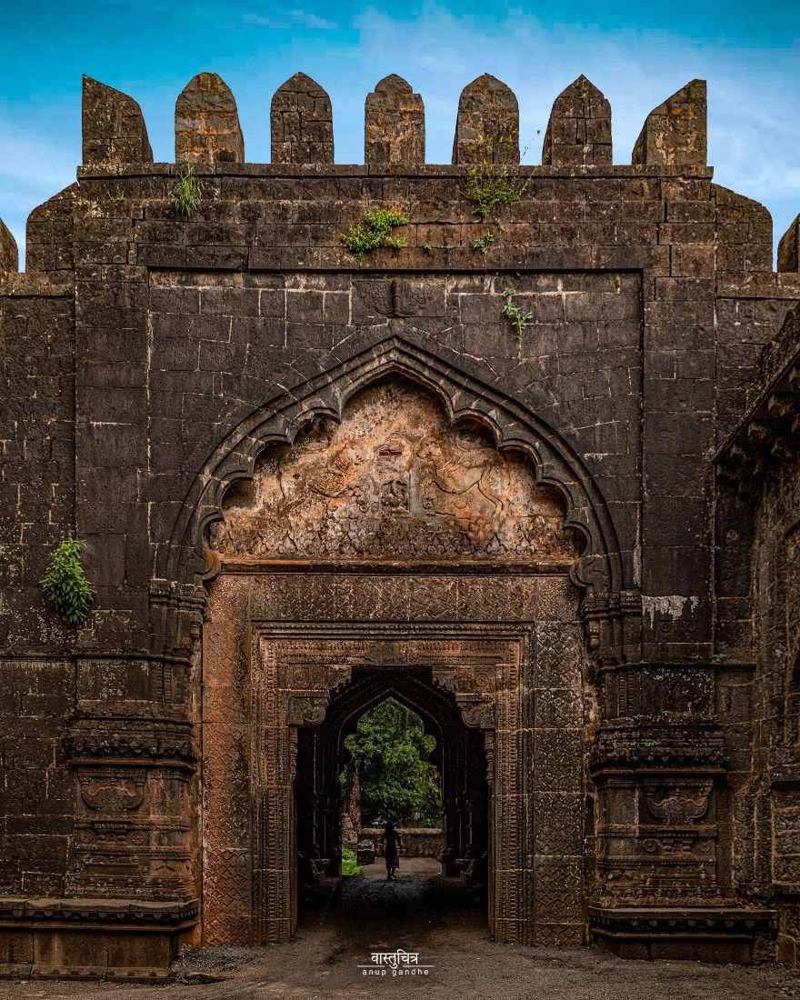
Largest fort in the Deccan, with a rich history of Shivaji Maharaj's escape through a secret tunnel. Located near Kolhapur.
Kolhapur district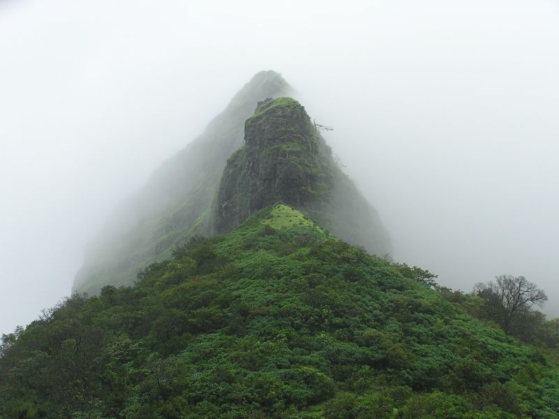
Famous for its impressive 'vinchu kata' (scorpion tail) structure. A favourite among trekkers, especially in the monsoon.
Lonavala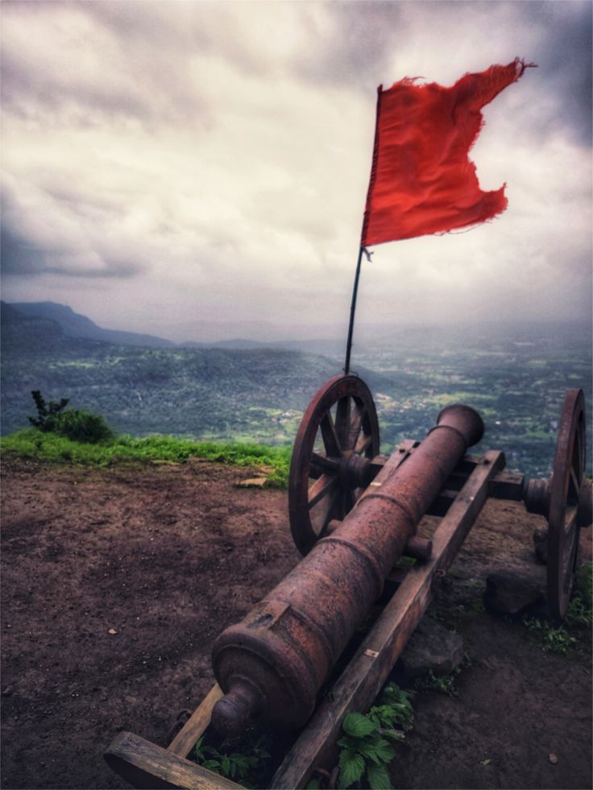
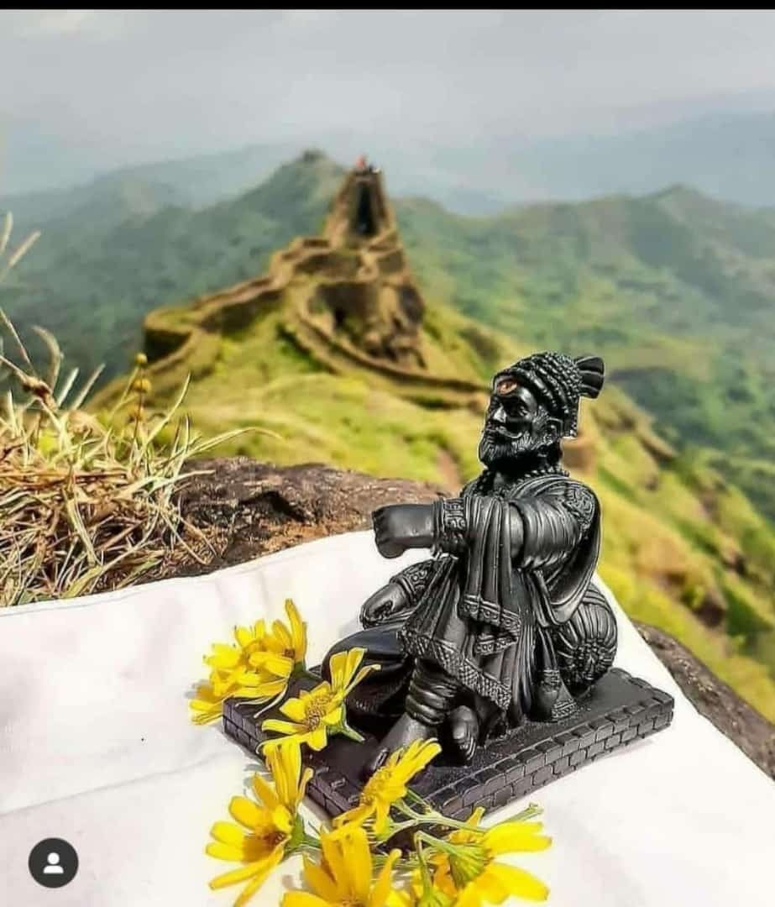
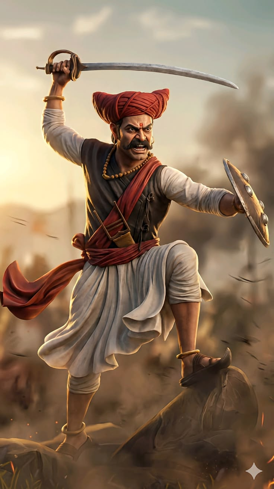
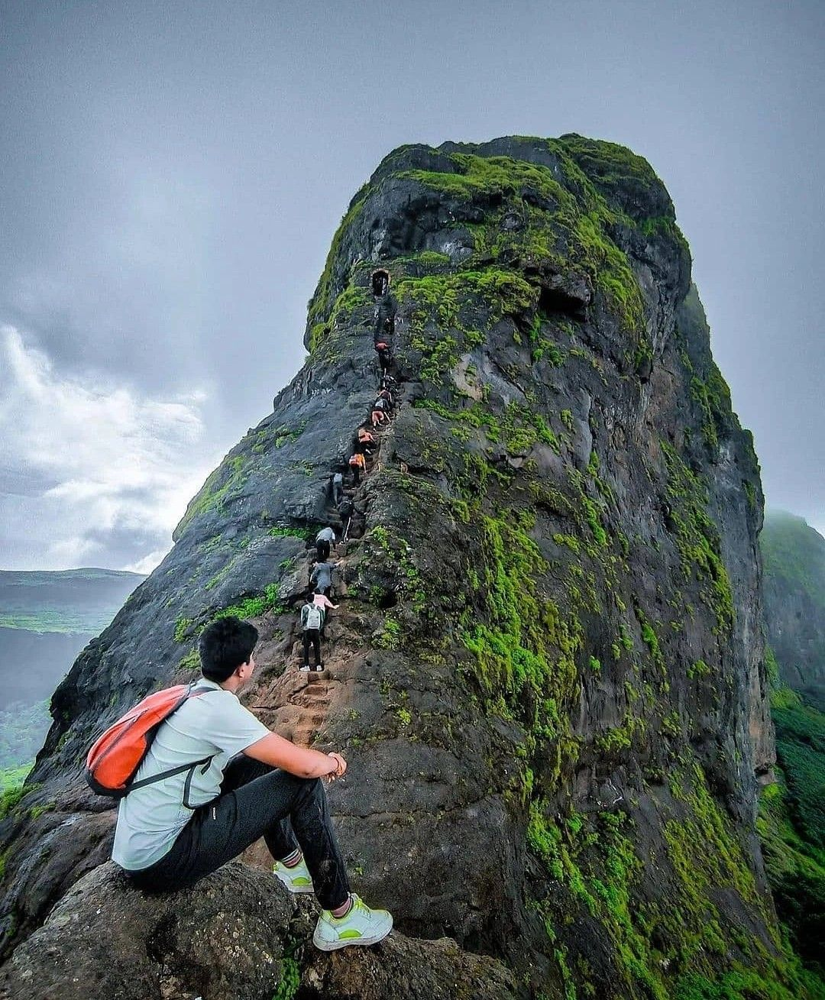